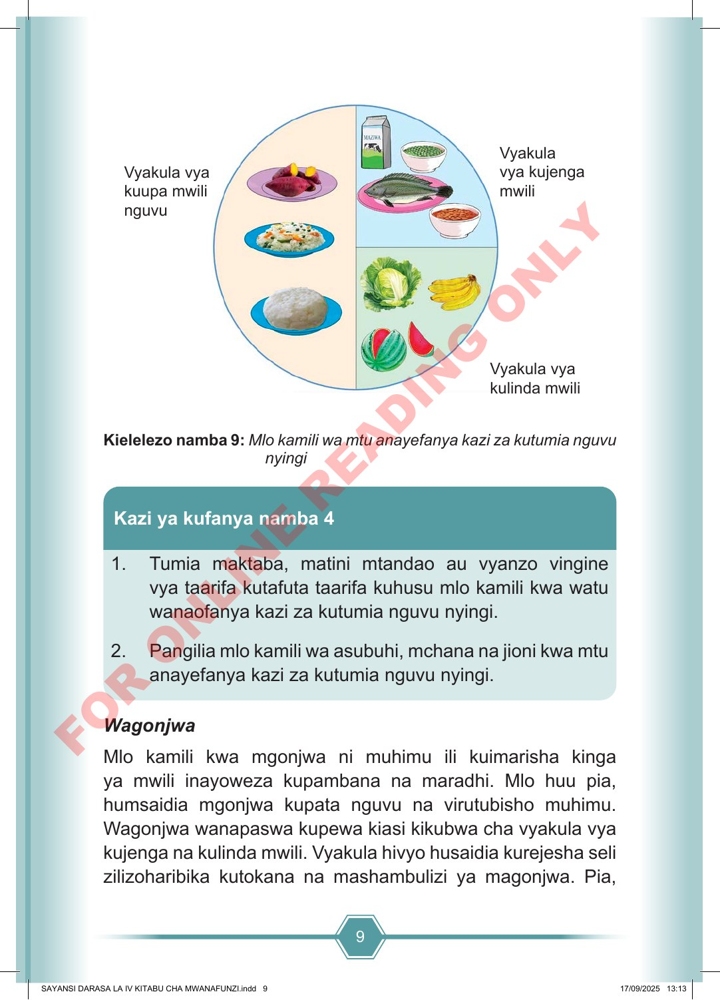

9 Vyakula vya kulinda mwili Vyakula vya kuupa mwili nguvu Vyakula vya kujenga mwili Kielelezo namba 9: Mlo kamili wa mtu anayefanya kazi za kutumia nguvu nyingi 1. Tumia maktaba, matini mtandao au vyanzo vingine vya taarifa kutafuta taarifa kuhusu mlo kamili kwa watu wanaofanya kazi za kutumia nguvu nyingi. 2. Pangilia mlo kamili wa asubuhi, mchana na jioni kwa mtu anayefanya kazi za kutumia nguvu nyingi. Kazi ya kufanya namba 4 Wagonjwa Mlo kamili kwa mgonjwa ni muhimu ili kuimarisha kinga ya mwili inayoweza kupambana na maradhi. Mlo huu pia, humsaidia mgonjwa kupata nguvu na virutubisho muhimu. Wagonjwa wanapaswa kupewa kiasi kikubwa cha vyakula vya kujenga na kulinda mwili. Vyakula hivyo husaidia kurejesha seli zilizoharibika kutokana na mashambulizi ya magonjwa. Pia, SAYANSI DARASA LA IV KITABU CHA MWANAFUNZI.indd 9 SAYANSI DARASA LA IV KITABU CHA MWANAFUNZI.indd 9 17/09/2025 13:13 17/09/2025 13:13 F O R O N L I N E R E A D I N G O N L Y